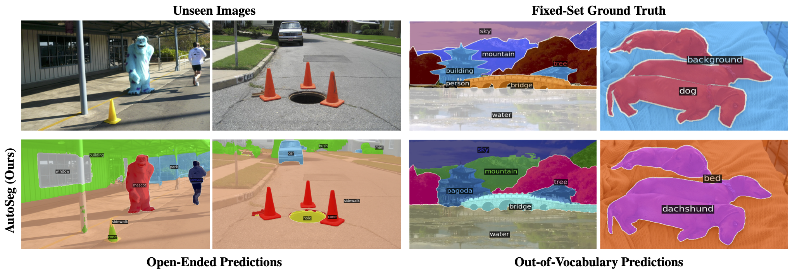
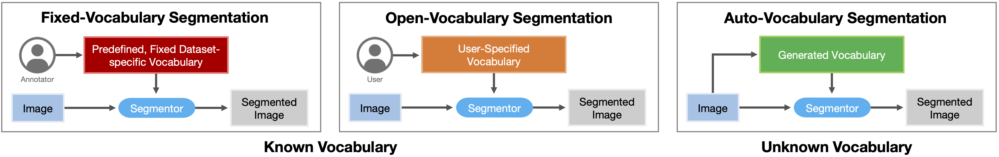
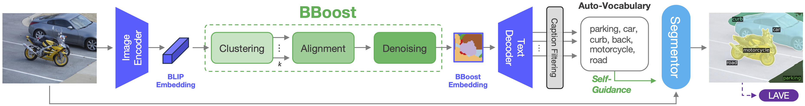
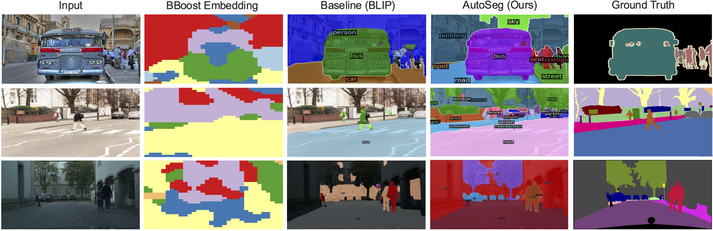
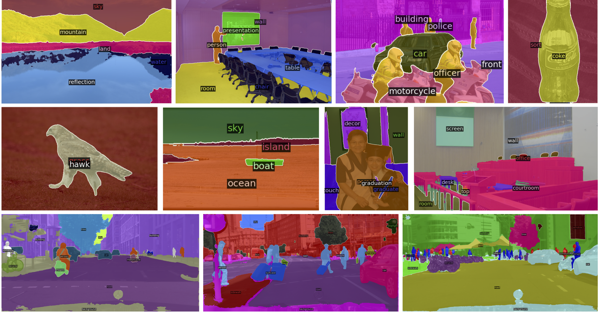

Open-Vocabulary Segmentation (OVS) methods are capable of performing semantic segmentation without relying on a fixed vocabulary, and in some cases, without training or fine-tuning. However, OVS methods typically require a human in the loop to specify the vocabulary based on the task or dataset at hand. In this paper, we introduce Auto-Vocabulary Semantic Segmentation (AVS), advancing open-ended image understanding by eliminating the necessity to predefine object categories for segmentation. Our approach, AutSeg, presents a framework that autonomously identifies relevant class names using semantically enhanced BLIP embeddings and segments them afterwards. Given that open-ended object category predictions cannot be directly compared with a fixed ground truth, we develop a Large Language Model-based Auto-Vocabulary Evaluator (LAVE) to efficiently evaluate the automatically generated classes and their corresponding segments. With AVS, our method sets new benchmarks on datasets PASCAL VOC, Context, ADE20K, and Cityscapes, while showing competitive performance to OVS methods that require specified class names.

Auto-Vocabulary Segmentation (AVS) is a new approach to semantic segmentation that removes the need for predefined or user-specified vocabularies. Traditional methods either rely on fixed class sets from annotated datasets (fixed-vocabulary segmentation) or require the user to provide prompts (open-vocabulary segmentation). In contrast, AVS automatically generates the vocabulary directly from the scene and applies it at the pixel level. This allows segmentation of any object without prompts, predefined class names, extra data, or retraining, making it scalable and practical for real-world tasks where the relevant categories are unknown in advance.

The image above shows an overview of the method. AutoSeg begins by encoding an input image with a pre-trained BLIP vision–language model. To better capture less salient objects, the embeddings are refined with our BBoost module, which performs clustering, alignment, and denoising. These enhanced embeddings are then decoded into captions, from which we extract a noun-level vocabulary specific to the scene. This automatically generated vocabulary is finally passed to the segmentation module, enabling precise pixel-level segmentation without predefined labels or user input.

BBoost is designed to refine vision–language embeddings so that objects, including those that are less salient, can be captured more reliably. The process begins with clustering, where BLIP patch embeddings are grouped at multiple image resolutions using k-means with different values of 𝑘. This captures semantic groupings at various granularities and can be repeated across cycles for added robustness. Cross-clustering consistency aligns the different clustering runs by applying Hungarian matching and aggregating their outcomes into soft cluster assignments. This step ensures that clusters remain semantically consistent across granularities. Cluster denoising refines these assignments with a Conditional Random Field and neighborhood majority filtering, producing smoother, more coherent clusters that form the basis for precise vocabulary generation. The image above visualizes the BBoost embeddings after semantic clustering (second column). The third and fourth column show the difference between open-vocabulary segmentation with captions generated by an out-of-the-box BLIP encoder-decoder versus AutoSeg. Below we highlight some of our favorite outputs.

@inproceedings{ulger2025autoseg,
title={Auto-Vocabulary Semantic Segmentation},
author={and Osman Ülger and Maksymilian Kulicki and Yuki Asano and Martin R. Oswald},
booktitle={International Conference on Computer Vision (CVPR)},
year={2025},
}